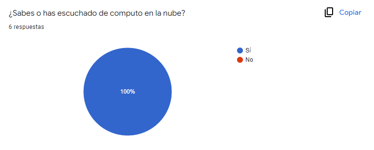
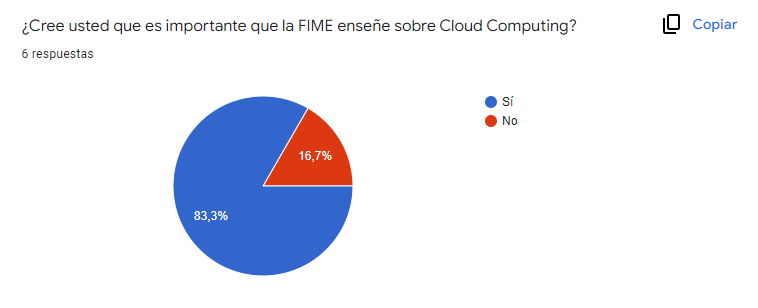
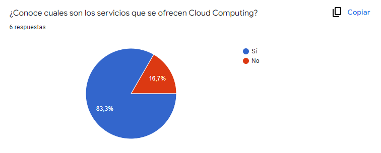
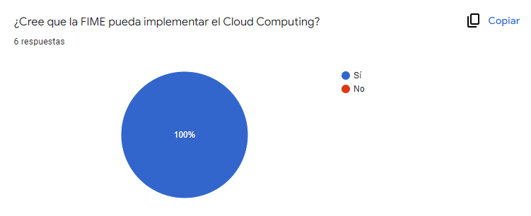
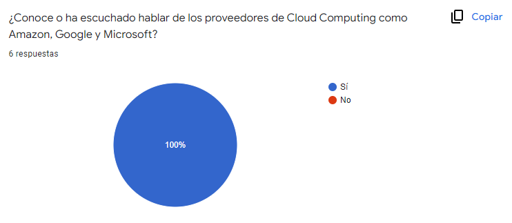
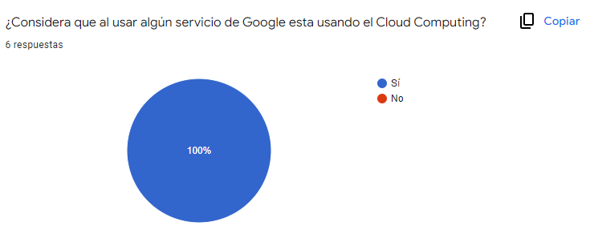
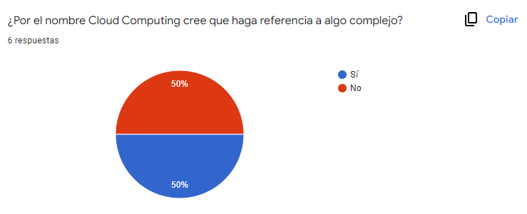
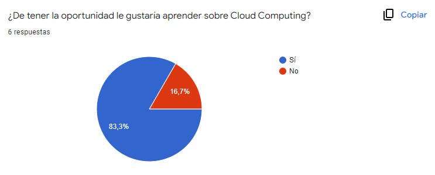

Computo en la nube
El cómputo en la nube es un modelo para crear acceso conveniente,
ubicuo y bajo demanda, vía internet, a un conjunto compartido de
recursos de cómputo configurables (por ejemplo, redes, servidores,
almacenamiento, aplicaciones y servicios), los cuales pueden ser
rápidamente asignados y provistos con un mínimo de gestión
administrativa e interacción con el proveedor.
Voutssás J.(2016).Introducción al cómputo en la nube,19
La computación en la nube es un nuevo modelo de computación que podría cambiar de manera positiva a nuestra sociedad, aportando ventajas, tanto al sector empresarial, gubernamental, como privado. Este estudio se pretende abordar las características, ventajas que tienen la tecnología Computo en Las Nubes, para la informatización de la sociedad, su aplicación y su impacto en la educación cubana.
Rojo, E. G. (2017). COMPUTO EN LAS NUBES, CARACTERÍSTICAS Y BENEFICIOS. CUBA Y LA NUBE, 15-30
El cómputo en la nube se refiere a la posibilidad de acceder a información
almacenada en servidores remotos y de procesarla por medio del uso de
cualquier plataforma de Internet. Actualmente, el uso del cómputo en la
nube por parte de los gobiernos, las empresas y los individuos está
convirtiéndose en una práctica generalizada.
Judith M. y J. RAMÓN.(2013)El Cómputo en la Nube en México: Alcances y
Desafíos para los Sectores Público y Privado, 5
Características:
- Escalabilidad y elasticidad: tus recursos computacionales no estarán limitados a una capacidad estática. Con esta funcionalidad de las plataformas en la nube tus sistemas se adaptarán a la carga a la que están siendo sometidos, por lo que no se agotará el almacenamiento o la capacidad de computación de tu aplicación.
- Seguridad: en la computación en la nube, la seguridad es igual de buena e incluso puede superar a los sistemas tradicionales. Esto se debe, en parte, a que los proveedores son capaces de dedicar recursos a la solución de los problemas de seguridad que muchos clientes no pueden permitirse el lujo de abordar.
- Costo: los costos se reducen notablemente. Un servidor en la nube convierte los gastos de capital en gastos de funcionamiento, lo cual tiene como resultado la reducción de barreras de entrada, ya que la infraestructura se proporciona típicamente por una tercera parte y no tiene que ser adquirida por una sola vez o tareas informáticas intensivas infrecuentes.
- Rendimiento: el rendimiento es una pieza clave en este modelo tecnológico, ya que todos los recursos están dispuestos para la optimización del resultado final. Se crean múltiples integraciones para que el usuario esté en capacidad de hacer un seguimiento permanente e implementar correcciones que permitan obtener aún más capacidad de los mismos recursos.
- Mantenimiento: en el caso de las aplicaciones de computación en la nube, este proceso se reduce a la asignación de personal capacitado para manejar servicios de seguimiento. La plataforma se encargará de lo demás, ya que el mantenimiento a los sistemas se puede configurar para que se dé automáticamente.
Tipos de nube:
- Las nubes públicas
- Las nubes privadas
- Las nubes híbridas
- Las multiclouds
Tipos de despliegue en la nube:
- Nube pública: en base a una red abierta para uso público se ofrece el servicio de computación en la nuve a todos los clientes externos que precisan de esta tecnología en internet.
- Nube privada: es la que permite centralizar el acceso a los recursos de IT de la organización, utilizando una tecnología de cloud computing propia.
- Nube híbrida: la composición de este modelo de cloud computing varía en función de las necesidades del negocio, pudiendo resultar de la combinación de una nube privada y una pública o de alguna de ellas y una comunitaria.
- Nube de comunidad: esta interpretación del cloud computing se asemeja bastante a la nube pública con la diferencia de que, en este caso, el acceso queda limitado a una comunidad específica.
Ventajas:
- Puede llegar a regiones geográficas nuevas y remotas e implementar soluciones a escala mundial en cuestión de segundos.
- La tecnología es compatible con cualquier dispositivo que posea internet como: teléfonos celulares, tabletas y computadoras de cualquier tipo.
- El usuario paga por los recursos sólo el tiempo que los utiliza, lo que se traduce en ahorro a todos los niveles.
- Aminora los costos de la compra de equipos de cómputo y el pago de las licencias por cada uno de los softwares requeridos.
- Reduce los gastos por consumo de luz, debido a la reducción de equipos en uso.
Desventajas:
- El contar con el servicio depende básicamente de disponer de una buena conexión a internet.
- Existe cierta vulnerabilidad de los datos sensibles, lo cual siempre representa una exposición a un posible ataque cibernético.
- Hay riesgo de pérdida de información debido a los grandes volúmenes de información que se manejan.
- Crea dependencia por parte del usuario hacia el proveedor de servicios, debido a las comodidades que éste ofrece.
- Los servicios gratuitos que almacenan datos en la nube no ofrecen tantas opciones de seguridad y privacidad como los de paga.
Modelos de servicio:
- El Software como Servicio (SaaS) cuenta con aplicaciones que se ofrecen a través de la web, a las cuales se accede a por medio de un navegador y no son administradas por la compañía sino por el proveedor de la aplicación. Esto libera a la empresa de la presión que supone realizar el mantenimiento del software, administrar la infraestructura, garantizar la seguridad de la red y la disponibilidad de los datos, entre otros aspectos relacionados con las aplicaciones en servidores propios.
- La Plataforma como Servicio (PaaS) es una capa intermedia entre la Infraestructura como Servicio (IaaS) y el Software como Servicio (SaaS). PaaS ofrece acceso a ambientes en la nube en los cuales los usuarios pueden construir y entregar aplicaciones sin necesidad de instalar y mantener ambientes de desarrollo complejos que normalmente son muy costosos. Adicionalmente, los usuarios también pueden escoger las características a incluir en la suscripción del servicio. De acuerdo con informes de Gartner, de los tres modelos de servicio, PaaS tiene el menor porcentaje del mercado, con ingresos proyectados al año 2021 de 27,3 billones de dólares.
- La Infraestructura como Servicio (IaaS) ofrece una forma estandarizada de adquirir capacidad computacional por demanda a través de la web durante un periodo de tiempo definido. Estos recursos incluyen almacenamiento, redes, procesamiento y hasta servidores completos. Normalmente son cobrados bajo una modalidad de pago por uso; por ejemplo, de acuerdo con la cantidad de almacenamiento o el nivel de potencia de procesamiento requerido por la compañía.
Referencias:
- Next U. (2018, 20 julio). 6 CARACTERÍSTICAS DE LA COMPUTACIÓN EN LA NUBE. Blog | NextU LATAM. https://www.nextu.com/blog/6-caracteristicas-de-la-computacion-en-la-nube/
- PowerData, G. (2017). Cloud: definiciones, servicios, despliegue, su seguridad y privacidad. PowerData. https://www.powerdata.es/cloud#:%7E:text=Los%20diferentes%20modelos%20de%20despliegue,el%20tama%C3%B1o%20y%20el%20acceso.
- Ventajas y desventajas de la computación en la nube. (2021, 21 octubre). BBVA.CH. https://www.bbva.ch/noticia/ventajas-y-desventajas-de-la-computacion-en-la-nube/
- Marketing. (2018, 24 agosto). Tres modelos de servicio de la computación en la nube | OPEN. Open International. https://www.openintl.com/es/tres-modelos-de-servicio-de-la-computacion-en-la-nube/
Encuesta
Haz click aqui para responder
Resultados de la encuesta
Pregunta 1:

Pregunta 2:

Pregunta 3:

Pregunta 4:

Pregunta 5:

Pregunta 6:

Pregunta 7:

Pregunta 8:

Google Drive
Es el servicio de almacenamiento de datos en internet que provee Google en su
versión gratuita e incluye una capacidad de almacenamiento 15 GB.
Este servicio funciona como un paquete de Windows Office u Open Office pero en
line, permite crear carpetas para almacenar y subir archivos de cualquier tipo.
Producir y modificar documentos en línea en diferentes formatos de procesador de
textos, planillas de cálcudo, pdf, editor de diapositivas, etc. También se pueden
elaborar formularios para encuestas, exámenes, editar e insertar dibujos e
imágenes.
Descargar archivo
Cloud Data Fusion
Cloud Data Fusion es un servicio gestionado ofrecido por Google Cloud Platform
para el procesado e integración de datos. Es la versión gestionada de Google de la
plataforma open source CDAP. CDAP es una plataforma de aplicaciones para crear y administrar aplicaciones de
datos en entornos híbridos y multinube. Permite a los desarrolladores con
abstracciones de datos y aplicaciones acelerar el desarrollo de aplicaciones de
datos, abordando una gama más amplia de casos de uso en tiempo real y por lotes.
Descargar archivo